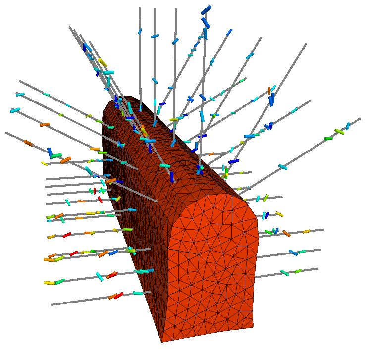

7.0 版新增功能
3DEC 7.0 包含许多改进；新增功能概述见以下各节。为 5.0 或 5.2 版创建的现有数据文件无法再按原方式运行。3DEC 7.0 无法恢复旧版本保存的文件。有关从 5.0 或 5.2 版迁移至 7 版的信息，请参阅面向 5.2 版用户的 3DEC 7 指南（3DEC 7 for 5.2 Users）。
模型建立与网格生成
新增了一些功能，使建模和网格生成更加方便，包括：
根据几何体生成网格
直接根据封闭几何曲面（例如 DXF）建立模型。可以用四面体块体或网格单元填充其体积。
导入网格
新的文件格式使块体和网格单元的导入、导出更加方便。导入时也可以将四面体块体转为网格单元。具有相同分组名称的块体可以合并，在单个块体内形成多个网格单元。与连接块体相比，这可使运行速度提高到 2 至 3 倍。
根据 VRML 文件创建 3DEC 块体
新的网格划分算法
新的网格划分算法通常速度更快，并能更好地控制网格单元尺寸及渐变。
拉伸块体以匹配几何曲面（例如 DXF）
利用几何曲面切割块体

- 对凸形状进行 Voronoi 块体划分

新增节理本构模型
除 5.2 版中的库仑节理模型和连续屈服节理模型外，7 版还增加了几种新的节理本构模型。
- 软化—愈合莫尔—库仑节理模型（Softening-Healing Mohr-Coulomb Joint Model）
- 双线性莫尔—库仑节理模型（Bilinear Mohr-Coulomb Joint Model）
- 幂律蠕变节理模型（Power Law Creeping Joint Model）
此外，通过C++ 用户自定义模型（C++ User-Defined-Models）创建自己的本构行为比以往更加容易，提供的 Visual Studio 模板可帮助您入门。一如既往，程序提供所有内置本构模型的源代码，既可用于验证实现后的行为，也可作为用户修改和扩展的基础。
结构单元
- 现在可以在 3DEC 中使用 FLAC3D 结构单元，包括衬砌、桩、岩石锚杆等。现在也可建立结构单元之间的连接。
- 新增一种称为混合锚杆（Hybrid Bolt）的结构单元。混合锚杆在锚索中加入销钉段，使锚杆能够抵抗跨节理的剪切和张开。


图 3：开挖隧道周围的锚索。销钉段按剪力显示等值着色。
命令与脚本
更新了 3DEC 的命令语法，以增强一致性和清晰度。所有命令尽量遵循名词 - 动词 - 选项 - 修饰项 - 范围的标准模式。命令关键字采用新的连字符语法，便于记录和列出完整命令以增进理解，同时仍允许不愿输入完整单词的用户使用缩写。我们特别注意使同一概念在整个程序中一致使用相同关键字，以便更容易将一个功能领域中获得的知识应用到另一个领域。
还采用了新的 FISH 内置函数命名约定。这大幅提高了函数名称的清晰度，并使编辑器能够在输入时自动突出显示正确和错误的内置函数名称。此外，还新增一个对话框，可在循环计算期间显示全局 FISH 变量的值。

为帮助用户继续使用现有数据文件和 FISH 程序，3DEC 7.0 编辑器内置了转换工具。
FISH 还增加了许多新类型，包括布尔、张量、矩阵、列表，以及关联数组或映射。现在使用插件选项，通过 Visual Studio 模板创建项目来编写自定义 C++ FISH 内置函数，也容易得多。
3DEC 还新增了一个功能强大得多的内置编辑器。现在可使用行号、代码折叠、改进的搜索和改进的语法高亮等功能。
交互式帮助
屏幕帮助
整套文档现在均以 HTML 文档提供。用户可以在 3DEC 的侧栏中，或在自己选择的浏览器中查看帮助。这也使其他集成帮助功能成为可能。

内联帮助
按
Ctrl+Spacebar将启用新的内联帮助功能，提示可用选项，并帮助您交互构建命令。

图 6：在数据文件（data file）或命令提示符（command prompt）处工作时，随时按 F1，即可在 FLAC3D 帮助中打开光标所在命令或关键字的完整文档，获得即时帮助。
Python
Python 现在已与 3DEC 全面集成。所有 FISH 函数均可作为 Python 函数使用，并包含许多其他 Python 库，例如用于数学和科学运算的 numpy 与 scipy，以及用于 GUI 编程的 pyside。参阅Python 脚本（Python Scripting）。
其他新增功能与更新
上述远非新增功能和改进的完整清单。尚未介绍的内容包括：
- 为所有对象提供分组和附加变量，包括结构单元、流动平面等。
- 可选的压缩保存文件
- 用于动力分析的 Maxwell 阻尼
- 网络许可证
- 可视化
- 改进了绘图项界面，增加拖放和剪切／粘贴支持。
- 优化了网格单元绘图项，并采用多线程处理，因此生成和响应速度应明显加快。
- 现在可以命名和保存绘图视图（相机设置），以供后续恢复和参考。
- 简化了绘图项的全部属性，使任何时候都仅显示有效选项。
- 还更新了与绘图有关的命令语法；绘图项控制开关关键字经过修改，使其布局和结构与交互界面中显示的属性相似。
- 改进了从绘图窗口导出数据文件的选项，使其更加可靠。生成的数据文件现在采用易读格式，可编辑后用于自定义脚本。
| 这些内容对您有帮助吗？… 版权与免责声明 |
FLAC3D © 2019, Itasca | 原文更新于 2020 年 10 月 8 日 |